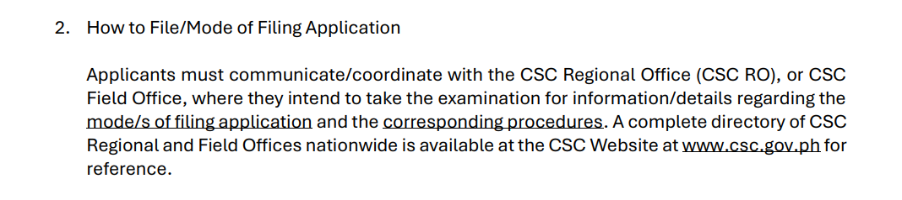
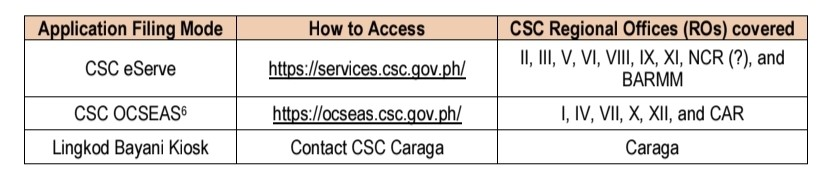

“Paano po mag-take ng CSE? Paano po pag-register, yung process?”
1. First of all, kailangan mong maka-secure ng slot. Ito po yung part na magfi-fill out ka ng form with your personal details at pipili ka ng gusto mong schedule for your appointment. Yung appointment po ay para sa personal na pagpasa ng requirements.
2.
“Saan po ba kukuha ng slot? Online po ba? Walk-in?”
It depends po kung saang region ka mag-ti-take ng exam.
Pwedeng sa online appointment/booking system na
eServe,
OCSEAS,
PickTime (usually for Bulacan), sariling online
appointment/booking system ng CSC sa region, or walk-in.
Sa announcement po ng CSC (please refer to the 1st image), regarding sa way ng pag-secure ng slot or
pag-file ng application, need niyo pong mag-wait ng announcement
or i-contact ang Regional or Field Office sa lugar niyo. Para sa complete
details at procedures.
Pero usually po (please refer to the 2nd image), yan po ang booking/appointment
system na ginagamit ng kada region. Possible po na yan din ang gagamitin
ngayon. Pero para mas makasigurado, wait na lang po kayo sa official
announcement or makipag-coordinate sa CSC Regional or Field Office ninyo.
(source of the 1st image:
CSC official announcement, page 7.)


3. “Kailan at anong oras po magiging available ang slots?” Mags-start po ang application period sa November 2, 2026. Pero pwede rin po kasi na magkakaiba ang date at ang oras ng pag-release ng slots sa kada region or kada province. That's why I highly recommend po na i-follow ninyo ang official Facebook page ng inyong CSC Regional Office, kasi dun din sila talaga nagpo-post ng mga announcement. Always check their FB page para updated po kayo once na mag-post sila ng details tungkol sa CSE March 2027. You can also send them a direct message if may questions kayo.